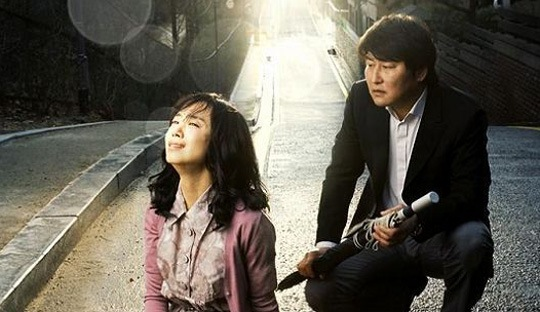

《雪季过客》这部电影在我的豆瓣想看电影单里已经躺了好久。英文名《Snow Cake》听上去有种童话般的意境，中文译名也有翻译成《雪花糕疗情》的，倒是直截了当点出了它的特性——一部疗伤电影。 有关疗伤电影，此前看过最舒服的要属《海鸥食堂》了。那还是在今年年初的冬天，转眼就又一个冬天了。《海鸥食堂》是标准的日式疗伤，含蓄而绵长；《雪季过客》则没有了日本电影的那许多精致的小细节，取而代之的是温情的幽默，或许这跟本片导演和编剧都是地道的英国人有关，即便电影是英国和加拿大合拍，故事也发生在安大略北部的一个小镇。 春季美丽的清晨，温度接近7度，偶尔有些小雪花飘落。一个沉默忧伤的英国男人为寻找素未谋面的亲生儿子的生母，来到加拿大。事实上他刚出狱，因为杀死了撞死他儿子的卡车司机。他在酒吧偶遇了搭车女孩，却不料在路途中发生车祸，女孩当场死亡。这次意外勾起了他痛苦的回忆，让他无法释然，前去女孩母亲家道歉，却发现女孩的母亲患有严重的自闭症，便决定留下来帮助她。然而最终真正得到帮助的却是他自己。正是这个健谈，洁癖，害怕扔垃圾，害怕人群，爱幻想，喜欢闪光球，喜欢研究草药茶，玩蹦床、拼字游戏，爱吃冰雪的自闭母亲让他最终放下了自责，卸下了悲伤的过往。 自闭症患者无意识地以自己独特的观念和行为替正常人疗伤，我想这才是导演真正想要表现的东西。当我们正常人以习惯的怜悯去看待，医治精神病患者时，其实我们有没有想过在他们眼里，我们才是需要被医治的对象。换一种角度，以他们的视角去看待这个世界，看待生活，原来本没有那么多纷繁的忧愁。世界如同闪光球般美好，就像吃一口冰雪，就能达到一次高潮；就像拼字游戏里每一个自创的词都有一个美丽的故事；就像2354朵雪花照片是来自“仁慈冬天的礼物”……可能我们能做的就是像死去的女孩那样“心怀善意，接受每个人的个性，接纳他们的不同”，然后尝试以他们的视角看世界，一个全新的视角。 英国男人临走前给自闭母亲做了一块雪花蛋糕，那是她最爱的。她津津有味地吃着，我想此刻的她一定是幸福的。其实她一直都是幸福的，倒是我们，习惯以为自己不幸的我们，在这一刻才忽然懂得了幸福的真正含义。
《雪季过客》这部电影在我的豆瓣想看电影单里已经躺了好久。英文名《Snow Cake》听上去有种童话般的意境，中文译名也有翻译成《雪花糕疗情》的，倒是直截了当点出了它的特性——一部疗伤电影。 有关疗伤电影，此前看过最舒服的要属《海鸥食堂》了。那还是在今年年初的冬天，转眼就又一个冬天了。《海鸥食堂》是标准的日式疗伤，含蓄而绵长；《雪季过客》则没有了日本电影的那许多精致的小细节，取而代之的是温情的幽默，或许这跟本片导演和编剧都是地道的英国人有关，即便电影是英国和加拿大合拍，故事也发生在安大略北部的一个小镇。 春季美丽的清晨，温度接近7度，偶尔有些小雪花飘落。一个沉默忧伤的英国男人为寻找素未谋面的亲生儿子的生母，来到加拿大。事实上他刚出狱，因为杀死了撞死他儿子的卡车司机。他在酒吧偶遇了搭车女孩，却不料在路途中发生车祸，女孩当场死亡。这次意外勾起了他痛苦的回忆，让他无法释然，前去女孩母亲家道歉，却发现女孩的母亲患有严重的自闭症，便决定留下来帮助她。然而最终真正得到帮助的却是他自己。正是这个健谈，洁癖，害怕扔垃圾，害怕人群，爱幻想，喜欢闪光球，喜欢研究草药茶，玩蹦床、拼字游戏，爱吃冰雪的自闭母亲让他最终放下了自责，卸下了悲伤的过往。 自闭症患者无意识地以自己独特的观念和行为替正常人疗伤，我想这才是导演真正想要表现的东西。当我们正常人以习惯的怜悯去看待，医治精神病患者时，其实我们有没有想过在他们眼里，我们才是需要被医治的对象。换一种角度，以他们的视角去看待这个世界，看待生活，原来本没有那么多纷繁的忧愁。世界如同闪光球般美好，就像吃一口冰雪，就能达到一次高潮；就像拼字游戏里每一个自创的词都有一个美丽的故事；就像2354朵雪花照片是来自“仁慈冬天的礼物”……可能我们能做的就是像死去的女孩那样“心怀善意，接受每个人的个性，接纳他们的不同”，然后尝试以他们的视角看世界，一个全新的视角。 英国男人临走前给自闭母亲做了一块雪花蛋糕，那是她最爱的。她津津有味地吃着，我想此刻的她一定是幸福的。其实她一直都是幸福的，倒是我们，习惯以为自己不幸的我们，在这一刻才忽然懂得了幸福的真正含义。
灵魂的絮絮低语——《对她说》
阿莫多瓦的片子，每一部我都觉得充满诗意，我喜欢里面西班牙特有的绚烂色调，喜欢萦绕其中的强烈的音乐感受。或许源于他对于节奏的掌控拿捏每每恰到好处吧，看他的片子也不会觉得冗长。而他对于女性题材的偏爱让我更加喜欢他的电影。他的影片，时而如西班牙红酒般浓烈，比如《回归》；时而如默片般沉静，比如《对她说》。 第一次看《对她说》还是在大学，那时几个女生一起挤在宿舍看这部片子，看是看完了，除了觉得画面和音乐美之外，就别无其它。那时的自己太浮躁。第二次看也就是在几个礼拜之前，陪小树看，内心沉静许多，也终于发现Caetano Veloso的《Cucurrucucu Paloma》就是在王家卫《春光乍泄》里同样出现过的那首歌。(参见另外一篇文章鸽子歌) 两个男人的友谊以及他们缺失的爱情，在安达卢西亚的美好风景中沉默地忧伤着。对她说，即使她无法回答。对她说，即使她醒来我已不在。他们的爱情，单有一方的执着，却缺失了女人的回应。孤独灵魂的絮絮低语就这样在默剧的里里外外延伸着。 看完电影，有几个画面你一定是忘不了的。女人在舞台上幽灵般地舞蹈，男人在台下沉默地哭泣；《Cucurrucucu Paloma》的歌声在安静的人群中回绕，和医院里男人的絮絮低语是如此相近；默剧《缩小的情人》里，缩小的男人最终钻进了女人的身体，将自己的全部奉献给了所爱的女人。影片中的男人于是也将自己献给了昏迷的女人，牺牲了自己，同时也真正换来了后者的苏醒。 结局意外而完美，昏迷的女人终于醒来，对着男人浅浅一笑，尽管这个他已经不是那个执着地对她说的男人，但我们突然相信，她睡着的时候一定也感觉到了那些灵魂的絮絮低语。 
我想我会变成这样都是你们害的（3） —— Rammstein
 乐队资料：Rammstein是一支德国的重金属乐队，1994年组建，由东德地区一群厌倦了工厂生活的无产阶级组成。它们的音乐混杂了工业和电子成分。他们的名字来源于Ramstein空军基地（加了个“m”）,也就是Ramstein空难的发生地。1988年8月28日，在一次美国空军的飞行表演中飞机相撞造成80人死伤。乐队起这样的名字旨在让人们不要忘记发生在空军基地的悲剧。从字面上看，“ram stein”其实是“石头大槌”的意思。） 说到Rammstein，立即想到让我开始热爱他们的那场震撼的柏林现场。从整个的演唱会的设计，服装，舞台，动作，造型，我觉得是对“工业金属”的一个很好的诠释，让我们这些接触这类音乐少的人很形象地认识到了比较抽象的一个名词。特别是演唱会里鼓的声效的处理，那个浑厚又不刺耳的鼓的效果处理实在是喜欢得不行了。 记得以前好像看过一篇文章，似乎是一个老师写的，说她想不通那些听摇滚的青年小伙怎么就那么爱甩头，似乎是为了装COOL而刻意行为另类。我以前也不是很想得通，直到我看了Rammstein的柏林现场，看到那群德国歌迷在那一个节奏地整齐地甩头。我不爱动的身体都有点蠢蠢欲动。这当然归功Rammstein音乐的力量。其实欣赏Rammstein的音乐有时候比许多音乐都要来得简单，这又刚刚说明了简单并不一定平凡。Rammstein其实把配乐都做到极简，我觉得可以把他们的音乐想象成一部类似于坦克那样的战车，以中速很稳很有力量的前进。他的鼓点就象一个大锤，一下一下地撞击着地面（人们甩头的节奏与力量来源于此），加上采样的失真吉他连复段，还有沉稳有力的贝司，主唱明显的德国佬，不管音乐多激也一直是低沉的嗓音。如果说这一切元素都显得闷的话，而作为调剂这一切的就是键盘手，键盘是乐队里最瘦小的一个人，没有其他人那么彪悍，他负责的键盘也正显示了灵气，犹如追随在战车周围一起前行的精灵。 由于战车的音乐号召力和战斗性太强，伴随着的猜疑和评判肯定少不了。主要都是对于德国战车的政治性猜测，由于国籍的关系，还有几乎遍布全部音乐里的队列行进节奏，有人把他们与NAZI，右翼联系起来。在我不懂歌词的时候也曾这样认为，但后来看了许多歌词的翻译，发现基本都是讲“性”“暴力”“迷信”等，唯一和政治沾边的只有一首歌是反美的。在这方面豆瓣有一位朋友已经做了详细说明：（http://www.douban.com/group/topic/1713155/ 有兴趣的可以看看） 其实就自己而言，是相对不爱说话的人，喜欢的音乐里伤感的也占了大多数，不大喜欢特别吵，特别闹的音乐。战车是为数很少让我很接受的一支乐队，当然也是因为他们的音乐虽然重，但是一点都不闹。最初接触战车的音乐时，我们是在大学的模型室里通宵的做模型，旁边一哥们在大声的放着CD，大家干得非常有劲；到后来毕业了，我最享受的事也是一个人抱着一壶暖水，在冬天的夜晚，一边听着战车一边打实况足球，狂虐电脑得时候。中国足球队每逢大战都要开动员会，进行思想教育，鼓舞士气。我一直觉得应该让这群人在比赛前听听战车。能不能赢不敢说，但估计起码能热血沸腾，斗志顽强一点。当然这是不可能的了。
乐队资料：Rammstein是一支德国的重金属乐队，1994年组建，由东德地区一群厌倦了工厂生活的无产阶级组成。它们的音乐混杂了工业和电子成分。他们的名字来源于Ramstein空军基地（加了个“m”）,也就是Ramstein空难的发生地。1988年8月28日，在一次美国空军的飞行表演中飞机相撞造成80人死伤。乐队起这样的名字旨在让人们不要忘记发生在空军基地的悲剧。从字面上看，“ram stein”其实是“石头大槌”的意思。） 说到Rammstein，立即想到让我开始热爱他们的那场震撼的柏林现场。从整个的演唱会的设计，服装，舞台，动作，造型，我觉得是对“工业金属”的一个很好的诠释，让我们这些接触这类音乐少的人很形象地认识到了比较抽象的一个名词。特别是演唱会里鼓的声效的处理，那个浑厚又不刺耳的鼓的效果处理实在是喜欢得不行了。 记得以前好像看过一篇文章，似乎是一个老师写的，说她想不通那些听摇滚的青年小伙怎么就那么爱甩头，似乎是为了装COOL而刻意行为另类。我以前也不是很想得通，直到我看了Rammstein的柏林现场，看到那群德国歌迷在那一个节奏地整齐地甩头。我不爱动的身体都有点蠢蠢欲动。这当然归功Rammstein音乐的力量。其实欣赏Rammstein的音乐有时候比许多音乐都要来得简单，这又刚刚说明了简单并不一定平凡。Rammstein其实把配乐都做到极简，我觉得可以把他们的音乐想象成一部类似于坦克那样的战车，以中速很稳很有力量的前进。他的鼓点就象一个大锤，一下一下地撞击着地面（人们甩头的节奏与力量来源于此），加上采样的失真吉他连复段，还有沉稳有力的贝司，主唱明显的德国佬，不管音乐多激也一直是低沉的嗓音。如果说这一切元素都显得闷的话，而作为调剂这一切的就是键盘手，键盘是乐队里最瘦小的一个人，没有其他人那么彪悍，他负责的键盘也正显示了灵气，犹如追随在战车周围一起前行的精灵。 由于战车的音乐号召力和战斗性太强，伴随着的猜疑和评判肯定少不了。主要都是对于德国战车的政治性猜测，由于国籍的关系，还有几乎遍布全部音乐里的队列行进节奏，有人把他们与NAZI，右翼联系起来。在我不懂歌词的时候也曾这样认为，但后来看了许多歌词的翻译，发现基本都是讲“性”“暴力”“迷信”等，唯一和政治沾边的只有一首歌是反美的。在这方面豆瓣有一位朋友已经做了详细说明：（http://www.douban.com/group/topic/1713155/ 有兴趣的可以看看） 其实就自己而言，是相对不爱说话的人，喜欢的音乐里伤感的也占了大多数，不大喜欢特别吵，特别闹的音乐。战车是为数很少让我很接受的一支乐队，当然也是因为他们的音乐虽然重，但是一点都不闹。最初接触战车的音乐时，我们是在大学的模型室里通宵的做模型，旁边一哥们在大声的放着CD，大家干得非常有劲；到后来毕业了，我最享受的事也是一个人抱着一壶暖水，在冬天的夜晚，一边听着战车一边打实况足球，狂虐电脑得时候。中国足球队每逢大战都要开动员会，进行思想教育，鼓舞士气。我一直觉得应该让这群人在比赛前听听战车。能不能赢不敢说，但估计起码能热血沸腾，斗志顽强一点。当然这是不可能的了。
在阳光下窒息——《密阳》
 一部充满阳光的影片，却看得我如此难受。索性离开电脑，去客厅泡脚，准备睡下。 好久没有这样痛的看完一部电影。在漫长的两小时二十分钟过后，阳光已经把现实的残忍一点点剥开摆在我们面前，我们于是同全度妍饰演的女主角李申爱一起经历了丧夫丧子之痛和信仰的破灭。电脑上还在重复着电影官方网站的音乐，已经是深夜，在冷清的客厅隔墙听着，渐渐就有一种想要赶快去关掉的念头。这音乐，说不清是悲还是无奈，只是有节奏地缓缓重复着，却突然有种钝钝的恐惧从热腾腾的盆底蔓延上来。原来我们都是害怕现实的。 “这不是有关宗教的影片，而是关于人的影片。”导演李东沧早就说过。在我看来，这不仅仅是关于人的影片，它还关乎现实，关乎信仰，以及人与现实、与信仰的对抗与和解。同时这样的关系还经历了从私密到暴露的过程，因为阳光让所有的秘密无处循形。 申爱来到密阳是对丧夫的逃避，这时的她相信自己能重新开始，自己即为自己的信仰。但这样的信仰却和周围人的不理解产生了冲突，她于是有了小小的虚荣心，这是自信却无法得到他人承认的人最容易产生的情绪。然而虚荣却让她又一次丧失了最亲的人。崩溃后，申爱找到了新的信仰——上帝，然而这样的信仰又只不过是对于丧子之痛的逃避。信仰于她，这个可怜的女人而言，始终只是麻痹自己忘记现实苦难的“良”药。上帝让她“新生”了，她却做出了常人难以理解的举动，亲自去原谅她的杀子仇人。这样的行为可以理解为她对上帝的信仰向自我信仰的转移和重叠。她相信自己能原谅自己的仇人，结果却导致了自己的再一次崩溃，因为不能接受在自己原谅仇人之前，仇人已经被上帝原谅。信仰破灭了，不论是对上帝还是对自己。她开始报复，自残，直到住进精神病院。 如果把申爱的故事当作对现实和信仰的对抗，那么金老板则是对现实与信仰和解的代表，在他身上，这种和解是自发的而不是刻意的。他看重职位看重人脉，看人行事，为追求女人而改变信仰。于是现实对他是温和的，信仰于他是自由的。可在申爱的眼里，他这样的人只能称为低俗。 “密阳是个奇怪的地方”，其实我们所处的每一个地方都和密阳一样，因为密阳就是现实所在，而且是阳光下无法藏匿的现实。当阳光一点点透过我们对现实的伪装，所有伤痛重新曝露的时候，我们是无泪的，因为太阳已经把泪水晒干，我们只会觉得窒息。 李东沧导演向来对音乐都是吝啬的，整个电影，我只记得末尾阳光照在杂乱草堆上后响起的那段，和官网上的一样，无奈而绵长。申爱出院，坐在院子里自己剪头发，金老板替她拿着镜子。镜头随着被风吹散的头发左移到院角的草堆上，阳光照在上面，杂乱而真实，正如现实，你永远说不清下一秒会是什么样子，我们又会选择对抗还是和解，如果可以选择的话。
我想我会变成这样都是你们害的（2）—— blonde redhead
 （乐队资料：Blonde Redhead成立于1993年，由日籍女歌手Kazu Makino和来自意大利的孪生兄弟Amedeo Pace & Simone Pace所组成。乐队刚出道时由于其嘈杂刺耳的吉他声,密集的编曲，于是，乐队的风格被定义为no-wave，噪音摇滚。在2000年后，乐队进入了沉寂期。时隔四年，他们竟以4AD旗下乐队的身份发行了名为
（乐队资料：Blonde Redhead成立于1993年，由日籍女歌手Kazu Makino和来自意大利的孪生兄弟Amedeo Pace & Simone Pace所组成。乐队刚出道时由于其嘈杂刺耳的吉他声,密集的编曲，于是，乐队的风格被定义为no-wave，噪音摇滚。在2000年后，乐队进入了沉寂期。时隔四年，他们竟以4AD旗下乐队的身份发行了名为
唯梦长存——《梦》
 大师黑泽明的电影，说来说去最喜欢的还是这部。早些时候依树送我一本《蛤蟆的油》，看过一半，已经对这位大师更加崇敬了。《梦》是他晚年的得意之作，黑泽明在其中运用大量的长镜头，超脱出情节的设置，将八个梦境以蒙太奇的形式展现在观众面前。 第一个梦：太阳雨。孩子在有太阳雨的日子偷看了狐狸娶亲，因而触犯了狐狸的禁忌，甚至被逐出家门。为寻求宽恕，孩子携匕首走到了开满鲜花的彩虹尽头。 第二个梦：桃园。三月三“桃偶节”，桃树们在桃园上演了一场能乐表演。曲终人散，孩子走近时才发现桃园只剩下残留的截截树桩。 第三个梦：雪女。暴风雪，登山队员在艰难的行走中一个接一个倒下了。雪女翩然而至，抚慰严寒困冻的人们，“雪是温的冰是烫的”。唯有队长最终推开了温柔的陷阱，成功地活了下来。 第四个梦：隧道。战争结束，作为唯一生还者的退伍军官却在返乡路上的一条隧道出口见到了全体死去的战友。生与死的会面在这个隧道出口纠缠成难以言喻的痛苦。死的人去了，生的人却将永远伤痛。 第五个梦：乌鸦。青年在美术馆欣赏梵高的画作，却意外走进梵高的绘画世界里。穿行在大片麦田和乌鸦之间，青年看见大师梵高如火车头般拼命地画着，他唯有脱帽向大师致敬。 第六个梦：红色富士山。核灾难后的富士山，噩梦般地燃烧着。绝望的人们只能选择跳海自尽。 第七个梦：哭泣的魔鬼。延续上一个梦，核灾难后的废墟生长了基因突变的怪异植物。旅行者遇见哭泣的食人魔，才知道即使是食人魔也已经是求生不能，求死不得。 第八个梦：水车之村。世外桃源般的小村庄，水车在清澈的河面上缓缓转着。淳朴的村民以最原始最自然的方式生存着。这里才是黑泽明理想的彼岸吧，而大师也已追随着这样的梦离我们远去了。 童话般的景象里，大师留给我们的是关于人类整体命运的思考。或许你会觉得黑泽明对于《梦》的阐释过多，那就当作是一位逝去的老者留给后人最后的喋喋不休吧，他只是想说的太多，而现在，只有梦还在了。
大师黑泽明的电影，说来说去最喜欢的还是这部。早些时候依树送我一本《蛤蟆的油》，看过一半，已经对这位大师更加崇敬了。《梦》是他晚年的得意之作，黑泽明在其中运用大量的长镜头，超脱出情节的设置，将八个梦境以蒙太奇的形式展现在观众面前。 第一个梦：太阳雨。孩子在有太阳雨的日子偷看了狐狸娶亲，因而触犯了狐狸的禁忌，甚至被逐出家门。为寻求宽恕，孩子携匕首走到了开满鲜花的彩虹尽头。 第二个梦：桃园。三月三“桃偶节”，桃树们在桃园上演了一场能乐表演。曲终人散，孩子走近时才发现桃园只剩下残留的截截树桩。 第三个梦：雪女。暴风雪，登山队员在艰难的行走中一个接一个倒下了。雪女翩然而至，抚慰严寒困冻的人们，“雪是温的冰是烫的”。唯有队长最终推开了温柔的陷阱，成功地活了下来。 第四个梦：隧道。战争结束，作为唯一生还者的退伍军官却在返乡路上的一条隧道出口见到了全体死去的战友。生与死的会面在这个隧道出口纠缠成难以言喻的痛苦。死的人去了，生的人却将永远伤痛。 第五个梦：乌鸦。青年在美术馆欣赏梵高的画作，却意外走进梵高的绘画世界里。穿行在大片麦田和乌鸦之间，青年看见大师梵高如火车头般拼命地画着，他唯有脱帽向大师致敬。 第六个梦：红色富士山。核灾难后的富士山，噩梦般地燃烧着。绝望的人们只能选择跳海自尽。 第七个梦：哭泣的魔鬼。延续上一个梦，核灾难后的废墟生长了基因突变的怪异植物。旅行者遇见哭泣的食人魔，才知道即使是食人魔也已经是求生不能，求死不得。 第八个梦：水车之村。世外桃源般的小村庄，水车在清澈的河面上缓缓转着。淳朴的村民以最原始最自然的方式生存着。这里才是黑泽明理想的彼岸吧，而大师也已追随着这样的梦离我们远去了。 童话般的景象里，大师留给我们的是关于人类整体命运的思考。或许你会觉得黑泽明对于《梦》的阐释过多，那就当作是一位逝去的老者留给后人最后的喋喋不休吧，他只是想说的太多，而现在，只有梦还在了。
如果这就是永生——《尘与雪》
如果时间以1/2的速度流过……
如果自然将我和它们这样带走……
如果这就是永生，我愿意这样死去……
起初看完这个电影，我实在无法言语，在我看来，任何的语言描述都是徒劳，在这样纯美的自然之景面前，我们所能做的只能是顶礼膜拜，不是对这部影片，而是对影片背后，人类周围的这个大自然。这是一部让你要屏住呼吸去观看的影片。与其说这是一部电影，不如说这就是摄影师Gregory Colbert的摄影集。以纪录片为载体，Gregory Colbert用音乐和文字将自己长期以来对于大自然的崇敬之作串联起来，形成一部动静得益的影片。用他自己的话来说，就是通过镜头来寻找动物与人类的共同语言以及动物本身的诗意感性，毫无疑问，他做到了，而且用摄影集以外的形式，让更多的人共享了他的发现。我想，如果没有这部记录片，我大概是不会知道Gregory Colbert其人，也不会看到这么多震憾人心的作品。 人类与动物的感应，就在这样流淌的时空、音乐中开始，缓慢的肢体语言的交错，到最后凝固成永恒。 A world without beginning or end, here or there, past or present. 


我想我会变成这样都是你们害的（1） —— coldplay
初想音乐部分不知道写什么好，最近也没有听多少音乐，也没有很打动我的专辑推荐。忽然想想自己音乐口味是如何转变到今天这样的，从小时候到处唱着四大天王到现在进了KTV基本没什么歌会唱，这一路是如何过来？借着这次机会回忆一下这些影响过我的人，这里借用Tizzy Bac乐队的一张专辑名《我想你会变这样都是我害的》，稍作改动作为这段回忆的大标题。当然这些人不会是害我的人，应该是我要感激的人。 虽然小时候也听过一些摇滚乐或者说非主流音乐。但真正意义上把我吸引到这个领域里以致后来无法离开的，第一个乐队，就是COLDPLAY，应该视为我的入门专辑。从英伦摇滚入门比起其它风格毕竟要容易一些，并且COLDPLAY的第一章专辑精彩无比，他们不久便成为非常流行的乐队足以说明。虽然今日的COLDPLAY显得很像一个流行乐团，但依然没有磨灭我对他们的喜爱和怀念。 记得当初第一次听到那首《YELLOW》，是我们在专业课上，我们的老师给我们放的一部广告片，里面用它作为背景音乐。当时全班看得都非常感叹，一个是广告做得好，一个是音乐出色。看完以后我们老师对我们说：“中国的许多歌手，就喜欢翻唱国外一些没那么出名的乐队的歌曲，这和你们做设计一样，不要总是抄袭国外的作品，没有属于自己的创作，永远没有让国外认同的机会。”大概就是这个意思。这句话我一直记到现在。当然我们老师当时说的人就是郑钧了，郑钧当时第一时间翻唱了这首《流星》，可能没有估计到，COLDPLAY会眨眼就红遍了世界。当把两个版本放在一起，就显得郑钧唱得是多么的逊色。 由于当时宿舍没有互联网，我一时也查不到这是哪个乐队的歌，也不知道如何查，所以只是记着那几句旋律过了好久。偶然的一天，当时是周末逛街经过新街口的音像店，习惯性进去看了一圈流行CD，没有什么想买的，不知怎么地就鬼使神差地看中了那个黄色的地球仪的封面，还掏钱买了，实在不可思仪。可想而知后来回去听到那首《YELLOW》的时候，是如何地感动而涕。 虽然大部分人都是沉醉于成名曲《YELLOW》，但个人认为第二张《A Rush of Blood to the Head》更为出色，英式的忧郁气质在里面尽显无遗，铿锵撞击的钢琴节奏，极其勾心的吉他弦律，加上Chris Martin极具个人魅力的唱腔，实在揪心得厉害…… 最后附送第二张专辑里最喜欢的一首歌的MV《the scientist》，和《in my place》的现场。网页右边的音乐播放器里新增的歌是《Don’t Panic》,送给最近觉得自己比较倒霉的人，比如我。希望早日好起来。
夕阳无限好——《三丁目的夕阳》
又是一年11月11。尽管在两年前就已经脱离了庆祝这个节日的行列，但每到这个时候还是会想起曾经那些一个人的滋味。有人陪的日子固然温暖，但那些单身的日子，有音乐和电影相伴，也未必觉得孤单。 一个人的时候，窝在被子里，看一场诗意的电影，或者温馨，或者忧伤，或者魅惑，或者绵长。世界只有你和电影，诗意环绕在周围，于是一切都变得美好了。两个人的时候，更不必说，诗意电影在两人世界里是个背景，我们于是得以在诗意下栖居，在琐碎里幸福。 看到夕阳时有如此美妙的感动，这还是第一次。当看到片尾东京铁塔沐浴在夕阳中时，眼中已经满是温柔的泪水，会突然想到若干年前的那首“东京铁塔的幸福”，还有Eason的“夕阳无限好”。 《三丁目的夕阳》讲述了1958年日本东京旧城区三丁目几户人家的温情故事。在这里，亲情、爱情、友情在狭窄的街道里蔓延，于是一台引发街坊邻居争相围观的黑白电视机，一只空的戒指盒，一件暗藏着护身符的毛衣，一顿简单的咖喱饭，都可以让你感动。原来幸福就藏匿在这样质朴单纯的生活里，满满的。 此片入选2005年日本电影旬报10佳影片，也是我们开始关注旬报十佳的起点。 怀旧的色调，流淌的音乐，淳朴的演出，偶尔漫画式的镜头语言，赋予了观众美好的观影体验，也冲淡了影片主题的煽情之嫌。如果真要说它煽情，这样的煽情也应该是最自然，最亲切的吧。 结尾字幕打出，一张张发黄的全家福接连出现在屏幕的时候，你一定已经开始在回忆那一个个幸福的故事了吧。
798 —— 窦唯 与 “不一定”
 当下想用最少的钱看到有水准的演出，关注窦唯是很好的选择。上周末窦唯在798的演出，就是免费。 当晚气氛不算热烈，除了偶尔有几个人叫叫窦唯的名字，人群里除了摇滚青年，还有许多附近打工的大叔，穿着工人服。大叔倒还好，不知道喜欢与否，起码也安静的听了一个多小时。比周围一些叽叽喳喳说个不停的少男少女好多了，说的还是与演出无关的。个人觉得象这种即兴的演出，台上的演出者或许比台下的欣赏者更享受。观众也比较容易满足，只要旋律节奏加快，就尖叫了，很简单自动，跟按个按钮一样。而更多的时候是比较闷一点的，比起乐队里成员互相的眼神交流还有会心的微笑。我相信他们从中找到的乐趣和惊奇，绝对比观众多的。既然是这样，我觉得不收费还挺好的。由于免费听了一场音乐会，最终我们放弃坐公交，选择打车回家作为自我奖励。 （最后附送帅哥照一张）
当下想用最少的钱看到有水准的演出，关注窦唯是很好的选择。上周末窦唯在798的演出，就是免费。 当晚气氛不算热烈，除了偶尔有几个人叫叫窦唯的名字，人群里除了摇滚青年，还有许多附近打工的大叔，穿着工人服。大叔倒还好，不知道喜欢与否，起码也安静的听了一个多小时。比周围一些叽叽喳喳说个不停的少男少女好多了，说的还是与演出无关的。个人觉得象这种即兴的演出，台上的演出者或许比台下的欣赏者更享受。观众也比较容易满足，只要旋律节奏加快，就尖叫了，很简单自动，跟按个按钮一样。而更多的时候是比较闷一点的，比起乐队里成员互相的眼神交流还有会心的微笑。我相信他们从中找到的乐趣和惊奇，绝对比观众多的。既然是这样，我觉得不收费还挺好的。由于免费听了一场音乐会，最终我们放弃坐公交，选择打车回家作为自我奖励。 （最后附送帅哥照一张）